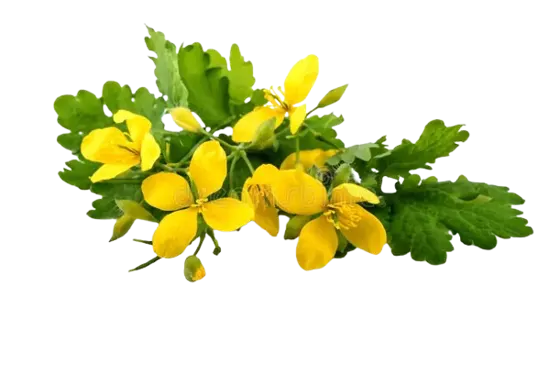

Plant Grimoire
Bloodroot
Bloodroot (Sanguinaria canadensis) is a woodland plant with distinctive white flowers and red sap.
History
Bloodroot is native to the eastern United States. The Algonquin Ojibwe are said to have used the root rhizome as a remedy for coughs. The plant was also used as a natural dye.
Characteristics
Bloodroot takes its name from the reddish-orange color of its root. It is most easily propagated in gardens by dividing the root stems rather than growing from seed. The plant prefers sheltered, mossy environments. Its white flowers are ephemeral, lasting only a few days. Seed dispersal relies on ants.
Magickal Properties
- Gender: Masculine
- Planet: Mars
- Element: Fire
- Powers: Love, Protection, Purification
Folk Names
King Root, Red Root, Tetterwort
Magickal Uses
For love: The root is carried or worn to draw love.
For protection: It is also carried to avert evil spells and negativity. Sprinkle around the outside of a building to ward off evil. Place near doorways and windowsills so the home will be protected.
For relationships: Bloodroot can be worked into relationship spells, either to strengthen an existing bond or to introduce an element of transformation and change into a partnership.
Root quality: The darkest red roots are considered to be the best, and are known as "king roots," or "he roots."
⚠️ Danger: This plant is extremely poisonous and should never be taken internally. External use only and avoid during pregnancy or if nursing.